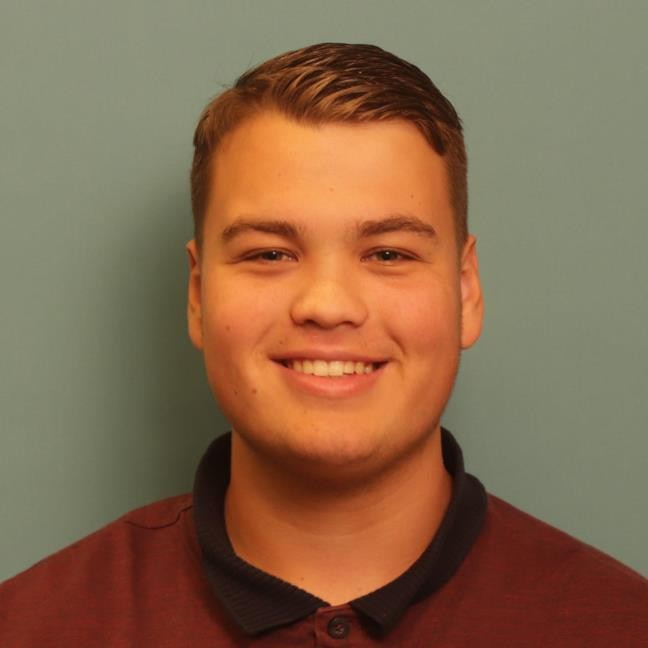

My name is Lucas Askmp, an 18-year-old student currently enrolled at Grafisch Lyceum Rotterdam, where I am pursuing a specialization in software development. My studies focus on mastering coding languages, web development, and client-oriented project work. I am dedicated to honing my skills in creating functional and aesthetically pleasing websites that meet the specific needs of clients.
In addition to my academic pursuits, I have a strong passion for game development. I enjoy the process of designing, coding, and bringing games to life, from initial concept to final product. This creative outlet allows me to apply my technical knowledge in a fun and engaging way.
I specialize in web development, working with HTML, CSS, and JavaScript to create dynamic and responsive websites. I also have experience in PHP for server-side scripting, and I'm currently expanding my skill set by learning C# and Unity for game development. You can explore my projects on GitHub or visit my website to see my work in action!
In my leisure time, I engage in gaming across multiple platforms, including my PC and PS5. I am deeply invested in a broad spectrum of game genres, from first-person shooters and racing simulations to immersive simulators and beyond. This enthusiasm for gaming is not just a hobby but a key component of my personal and professional interests, reflecting my commitment to exploring and understanding diverse gaming experiences.
